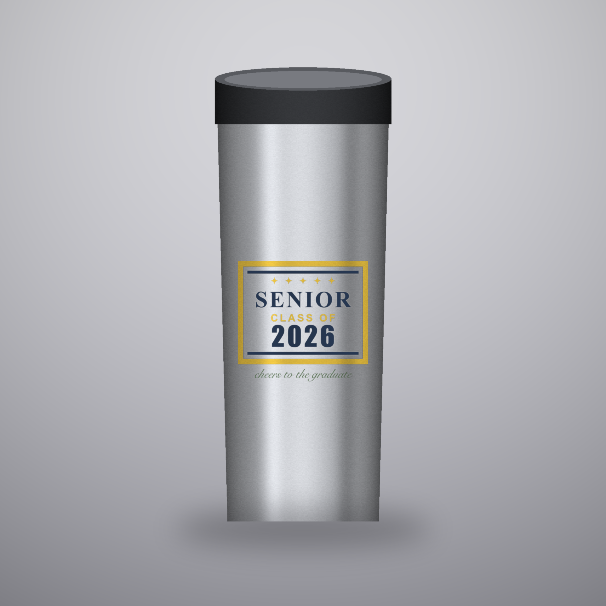

Stop Selling Generic 'Class of 2026' Mugs. Sell These Instead.

The market for plain white mugs with "Class of 2026" slapped on the side in generic script font is saturated. You will not win that SEO battle on Etsy.
To make real money with graduation drinkware, you need a design that feels branded, structural, and expensive. You need to mimic the aesthetic of high-end university bookstores, not discount craft bins.
The Block-Letter Silhouette Label
We engineered a water bottle/tumbler label SVG using thick, solid block letters (no thin serifs that peel off in the dishwasher). It features a clean bottle silhouette and a gold divider line.
The Secret: Pure Geometry
Most SVGs you buy online use "live text" for the numbers, meaning when you import them into Cricut Design Space, the machine gets confused and throws an error. Our class2026_bottle_label.svg was built using raw, overlapping rectangles. It is indestructible in Design Space.
The Drinkware Tech Stack (Affiliate Links)
- The Tumbler: Stop buying cheap blanks. Use Maars Skinny Matte Tumblers (16oz). They hold vinyl beautifully.
- The Vinyl: TeckWrap Holographic Gold for the divider line.
- The Squeegee: Cricut XL Scraper to ensure zero bubbles on curved surfaces.
Grab the Design
Ready to upgrade your Etsy shop's graduation lineup?
🛒 Recommended Cricut Materials for This Project
- Permanent Adhesive Vinyl (Mugs, Signs, Tumblers): Oracal 651 Glossy & Matte Permanent Vinyl Multipack
- Heat Transfer Vinyl (T-Shirts & Tote Bags): Siser EasyWeed HTV Roll (Warm Peel, CPSIA Certified)
- Transfer Tape & Tools: HTVRONT Medium-Tack Clear Transfer Tape + XL Scraper
- Heavyweight Cardstock (Toppers & Keepsakes): 100lb Smooth Core Cardstock Variety Pack
Grab the Free 8-Design SVG Starter Pack + Cut Settings PDF
Want cut-ready files to practice this tutorial? Enter your email to unlock the Starter Pack ZIP immediately.
⬇️ Download Free Starter Pack (.ZIP)